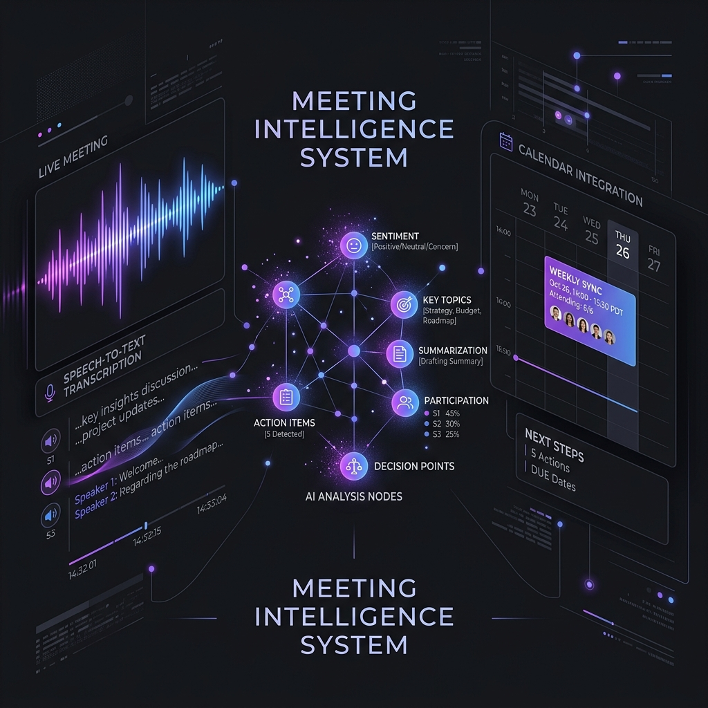
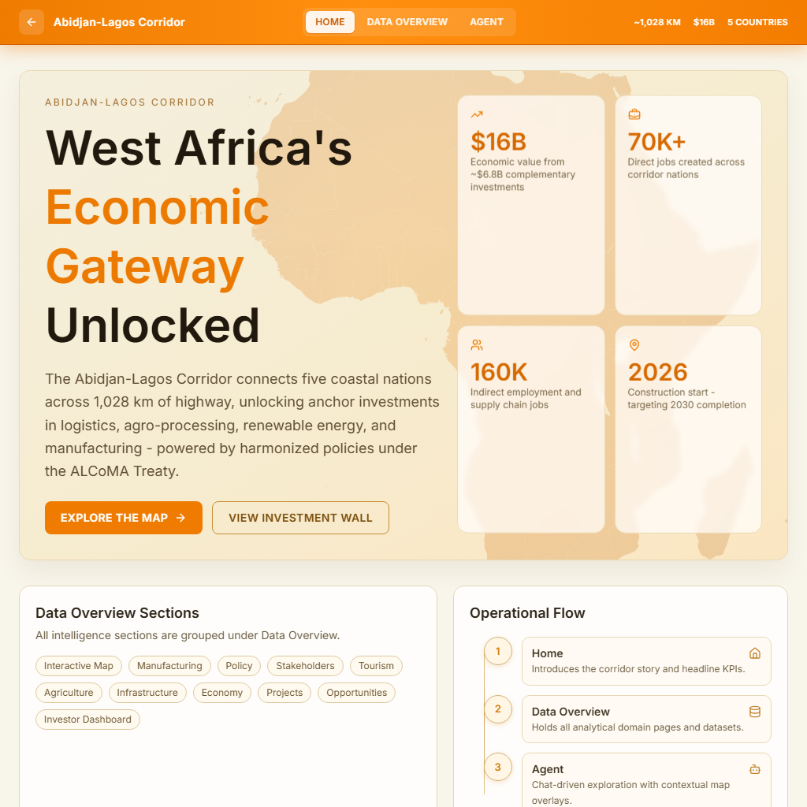
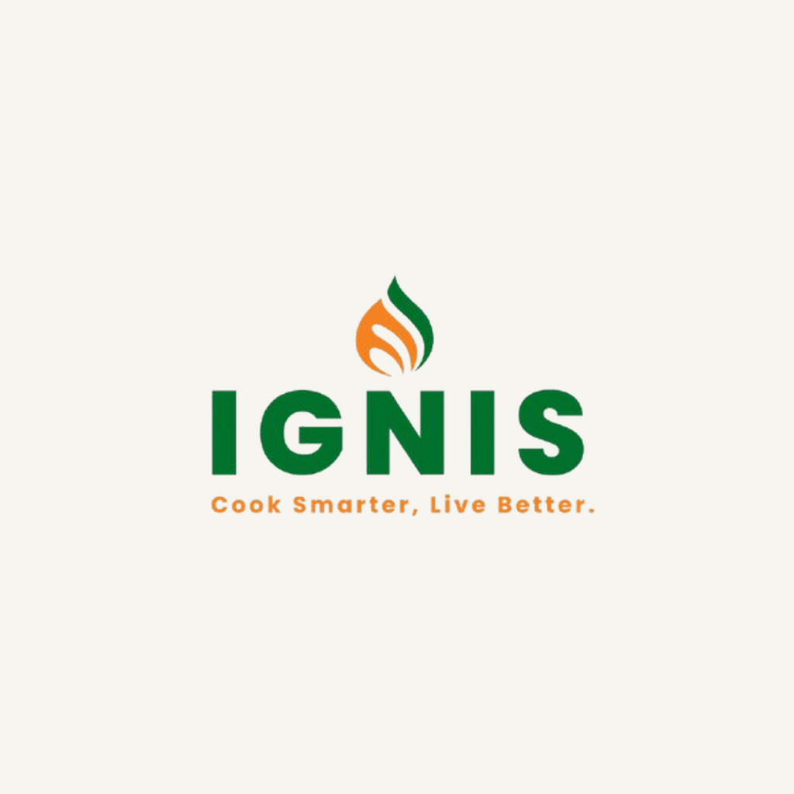
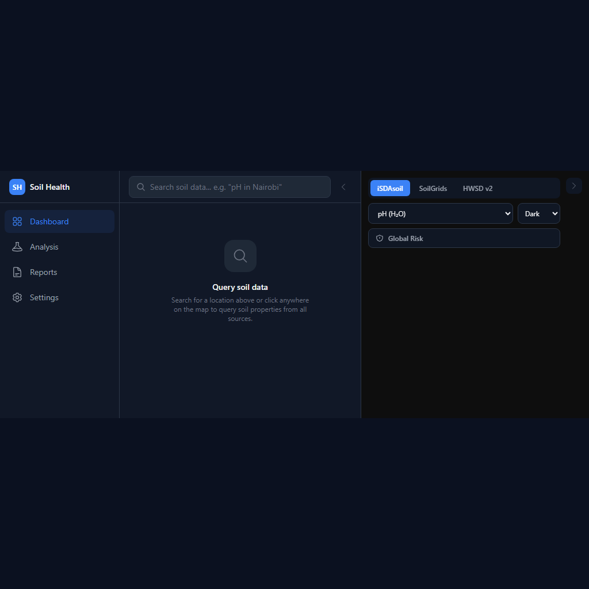
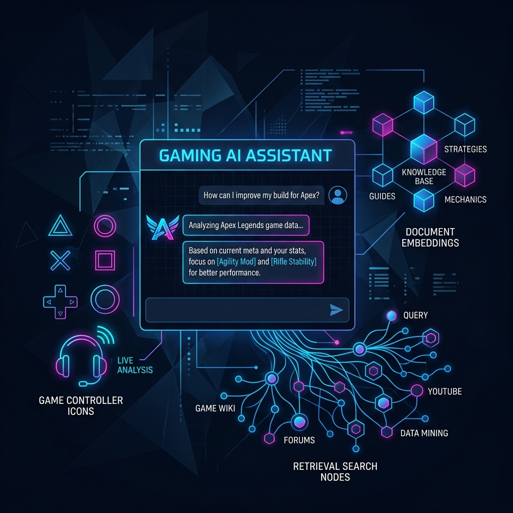
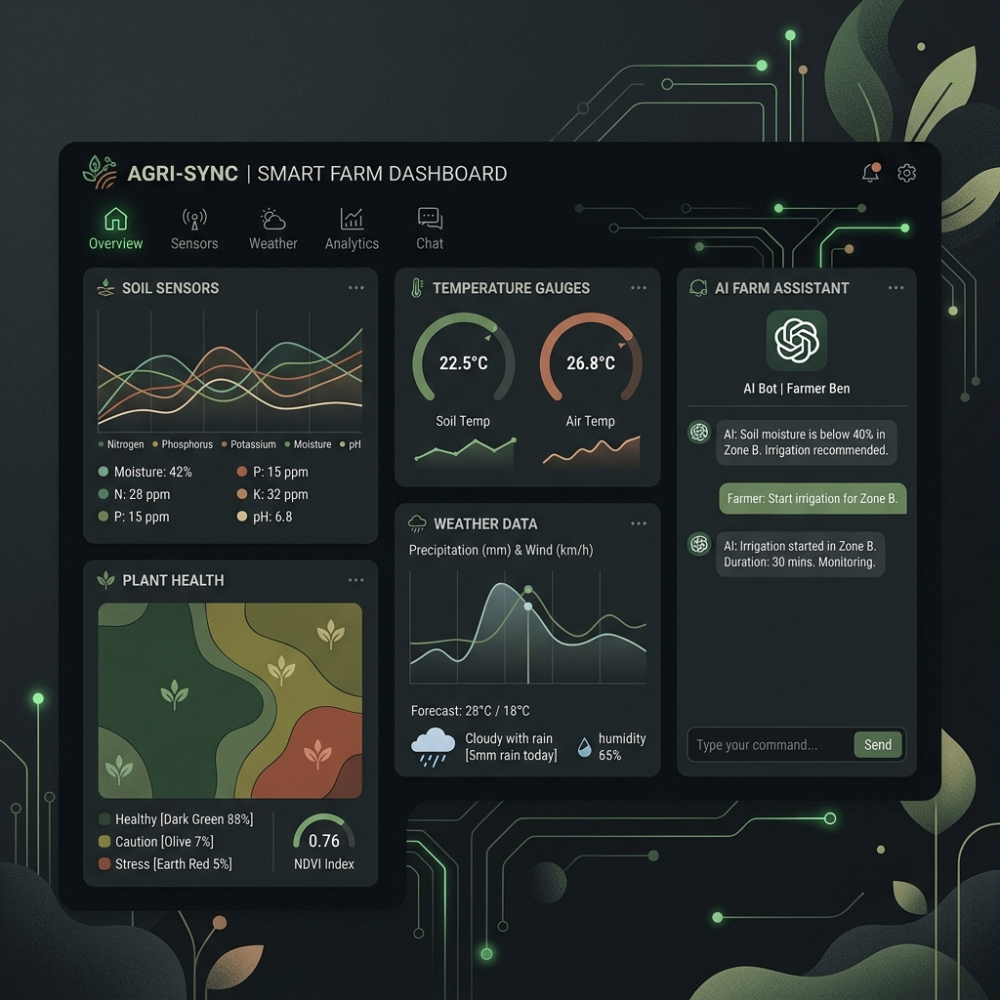
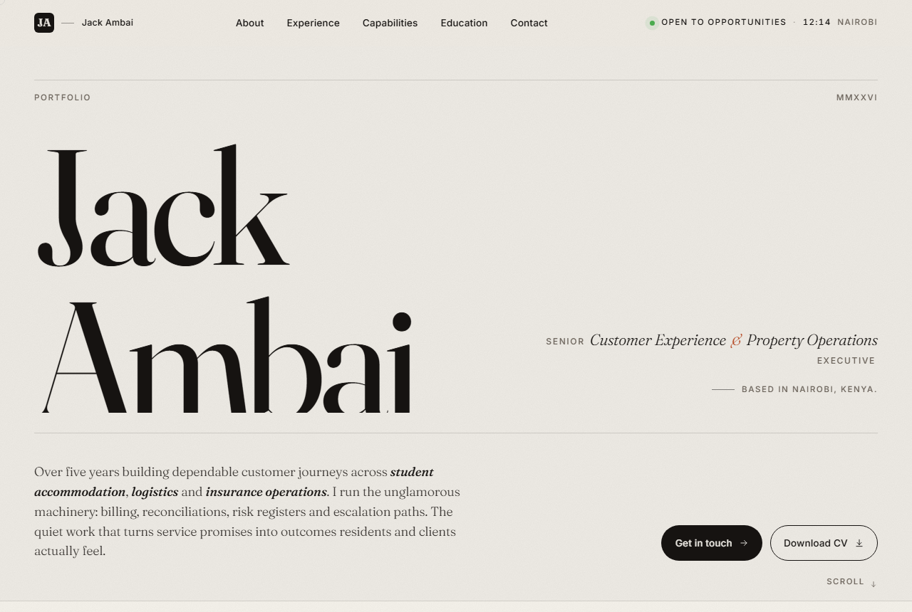
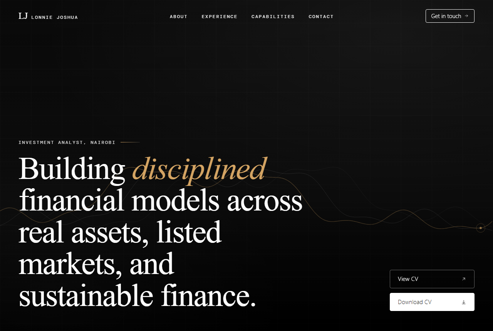
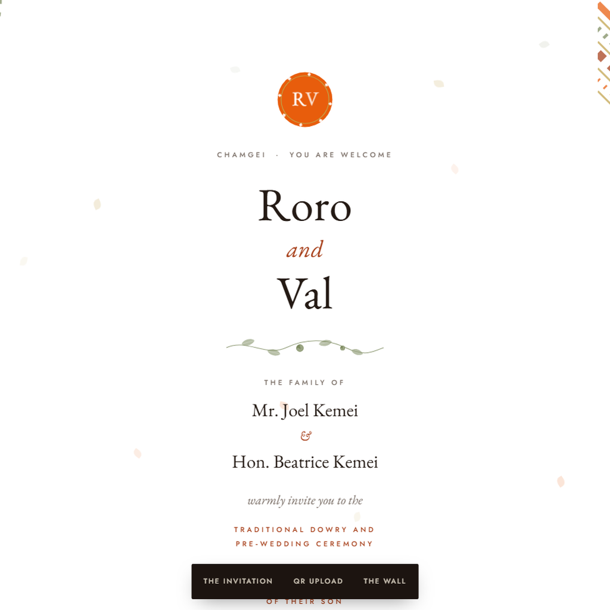

I am Julian Tanui, a Fullstack Developer & AI Engineer based in Nairobi, Kenya.
Get My Resume
Download my CV to learn more about my experience and skills.

About
I'm a Fullstack Developer and AI Engineer with a BSc in Informatics and Computer Science from Strathmore University. I build software products that solve real-world problems, from platforms that assess financial risk in carbon credit markets, to intelligent systems that automatically transcribe and analyze meetings, to tools that detect manipulated images using deep learning. Currently working in the climate technology space at Verst Carbon, I bring hands-on industry experience in turning complex ideas into polished, production-ready applications.
Expertise
- AI & Machine Learning
- AI Agent Systems
- Fullstack Development
- Python
- TypeScript
- Cloud & DevOps
- Geospatial Intelligence
Experience
Verst Carbon
SWE/AI Engineering Intern
Feb 2026 - Present
• Designed and built multi-agent AI systems (LangGraph,
LangChain) that automate multi-step analysis across geospatial,
infrastructure, economic, and monitoring data, routing each task
to the most suitable language model for accuracy and cost.
• Applied retrieval-augmented generation to ground AI responses
in trusted sources, keeping outputs accurate and traceable.
• Built full-stack web applications with Next.js, React, and
Python (FastAPI, Node.js), including authenticated dashboards,
interactive maps, and real-time chat.
• Developed data pipelines that ingest and validate large
geospatial and economic datasets, with automated quality and
freshness checks.
• Containerized and deployed services with Docker and CI/CD,
adding monitoring and evaluation to track reliability.
CIC Insurance Group
ICT Intern
Jan 2025 - Apr 2025
• Troubleshot network issues and reported outages or
performance concerns.
• Provided help desk support by responding to employee
tickets and escalating complex issues.
• Set up and configured laptops, desktops, and mobile
devices; ensured network/domain connectivity.
Kenya National Library Service (KNLS)
Volunteer
Jan 2024 - Apr 2024
• Taught basic computer literacy skills to students,
improving their proficiency with technology.
• Assisted in organizing educational workshops and
fostering a collaborative learning environment.
• Assisted in front desk services and arrangement
of books.
Education
Strathmore University, Nairobi
BSc. in Informatics and Computer Science
June 2022 - August 2026
Graduated August 2026. Second Class Honours, Upper Division.
Dean's List (2024-2025, 2025-2026).
• Local Committee Vice President for Finance
and Legalities.
• Project Manager for SDG Hub in Strathmore.
Moi High School, Kabarak
Kenya Certificate of Secondary Education
2018 - 2021
Mean Grade: A-
• Attended Open P-TECH course on emerging
technologies.
• Active in Chess Club, Football, and Kenya
Drama Festival.
Recent Projects
Here are some of my favourite projects. Feel free to check them out.
-

AI + Real-time SystemsMeeting Intelligence. -
ML + Computer VisionDeepDetect.
-

Geospatial IntelligenceCorridor Intelligence. -

Clean Energy PlatformcleancookIQ. -

Soil Data AnalyticsSoil Health Dashboard. -

RAG + LLM + Web AppRAG Gaming Assistant. -

IoT + AI ChatbotSmartFarm. -
Portfolio WebsiteBrian Tanui.
-

Portfolio WebsiteJack Ambai. -

Portfolio WebsiteLonnie Joshua. -

Traditional WeddingWedding invitation.
Meeting Intelligence Engine
A full-pipeline meeting intelligence system: captures meetings via Recall.ai bot, transcribes with AssemblyAI (speaker diarization), extracts intelligence using GPT-4o (summaries, action items, decisions, risks), generates embeddings for RAG chat, and auto-generates weekly team podcasts with TTS. Features live WebSocket real-time transcription, Microsoft/Google Calendar integration, multi-language support (EN/SW/FR/ES), and enterprise security (JWT, RBAC, HMAC, Fernet encryption). Built with durable Inngest pipelines and 108 automated tests.
- Next.js
- FastAPI
- GPT-4o
- Supabase
- pgvector
- Inngest
DeepDetect
An explainable deep-learning system for detecting forged images and videos. Built with a ResNet50 model trained on a large public dataset with strong accuracy. Features GRAD-CAM explainability visualizations, video frame aggregation pipeline, Google OAuth + JWT authentication, admin analytics dashboards, detection history, and PDF report generation. Full-stack with React/TypeScript frontend and Flask backend.
- PyTorch
- React
- Flask
- Computer Vision
- XAI
Corridor Intelligence Platform
A decision support platform for the Abidjan-Lagos Corridor, a 1,028 km highway corridor linking five coastal nations in West Africa. It consolidates infrastructure, economy, manufacturing, agriculture, tourism, policy and stakeholder data into a single dashboard, with an interactive map for spatial exploration and a chat-driven agent that answers questions and drives contextual map overlays. Also tracks pipeline projects and investment opportunities through a dedicated investor dashboard. Built for the EU-Africa Business Forum.
- Next.js
- React
- TypeScript
- MapLibre GL
- Recharts
- Tailwind
cleancookIQ
A platform coordinating Kenya's institutional shift away from polluting cooking fuels, co-built with Ignis Innovation. It gives each party in the transition its own workspace: institutions run assessments and track deliveries, suppliers manage storefronts and installation crews, funders review portfolios and financing applications, and researchers work with county-level data. Covers carbon project registration, credit verification and digital monitoring records, alongside a supplier marketplace, county map, policy library and financing tools.
- React
- TypeScript
- Supabase
- Leaflet
- Recharts
- Tailwind
Soil Health Dashboard
An analytical dashboard that unifies authoritative soil datasets into one workspace. It queries live soil properties for any coordinate, compares sources against each other, and scores degradation risk across a single point or a drawn polygon. Pulls from ISRIC SoilGrids at 250 m globally and iSDAsoil at 30 m across Africa, carrying uncertainty ranges through to the interface. Built so that no source ever substitutes a value: when data is missing or a pixel is masked, the app reports the gap and the reason for it rather than filling it in.
- Next.js
- React
- TypeScript
- MapLibre GL
- Recharts
- Tailwind
IoT Smart Farming Assistant
A comprehensive smart farming management web application with IoT integration, real-time monitoring, and AI-powered insights. Features a real-time dashboard for soil moisture, temperature, and environmental conditions, weather forecast integration via OpenWeatherMap, an AI chat assistant powered by Groq for personalized farming advice, and data-driven analytics for crop management. Built with React 18/TypeScript (Shadcn/ui) frontend and FastAPI/Python backend.
- React
- FastAPI
- Groq AI
- IoT
RAG Gaming Assistant
An intelligent Q&A system for game documentation, lore, and mechanics. This RAG (Retrieval-Augmented Generation) application uses hybrid dense + sparse retrieval (FAISS + BM25) with HuggingFace sentence transformers. Features persona-based responses (Guide, Sage, Expert, Casual), adjustable detail levels, multi-format document support (PDF, text, websites), and optional GPT-3.5 integration. Deployed on Streamlit Cloud.
- LangChain
- FAISS
- Streamlit
- RAG
Brian Tanui — Portfolio
A bespoke personal portfolio for a finance and investments consultant. Features a dark, elegant design, bilingual English and German content, animated section reveals, and a clear narrative of experience, education, and skills. Built as a fast, fully responsive single-page site.
- HTML
- CSS
- JavaScript
- Responsive Design
Jack Ambai — Portfolio
A refined personal portfolio for a customer experience and operations professional. Features bold editorial typography, a live Nairobi clock, smooth reveal-on-scroll animations, a custom cursor, and copy-to-clipboard contact details. Fully responsive across devices.
- HTML
- CSS
- JavaScript
- Responsive Design
Lonnie Joshua — Portfolio
A polished personal portfolio for an investment analyst. Features a dark theme, an animated flowing background, and a clear presentation of experience and capabilities across real assets, listed markets, and sustainable finance. Fully responsive.
- HTML
- CSS
- JavaScript
- Responsive Design
Wedding Invitation — Roro & Val
A traditional Kalenjin dowry and pre-wedding invitation site for the Keretab Tuga ak Chaik of Errol Kemei (Roro) at Kakibei Grounds, Kericho. Culturally grounded design with custom SVG ornamentation (pots, vines, patterned corner fans), a formal invitation masthead, order-of-the-day schedule, couple’s story timeline, RSVP reply sheet, QR photo upload, and a guest moments wall. Built as a multi-route Next.js app and deployed on Vercel.
- Next.js
- React
- Custom SVG Design
- RSVP Flow
- Responsive Design
Contact Me
I would love to hear from you. Let's connect and discuss opportunities.
Get in Touch
Have a project in mind or want to discuss opportunities? I'm always open to interesting conversations about fullstack development, AI engineering, and building great products. Drop me an email and let's connect.